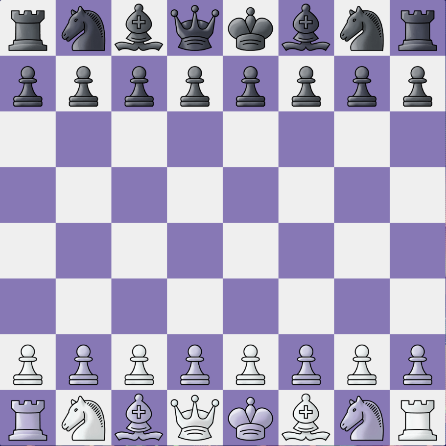

SETUP, TURNS, and CAPTURING

Setup:
The board is setup as shown. There should always be a white square at the closest right-hand
side for both players. Remember that the queen must be on a square that matches her color.
Turns:
White always moves first, and players alternate turns. Players can only move one piece at a time, except when castling (explained later).
Capturing:
Players take pieces when they encounter an opponent in their movement path. Only pawns take differently than they move (explained later). Players cannot take or move through their own pieces.